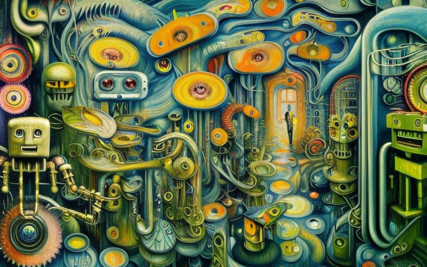
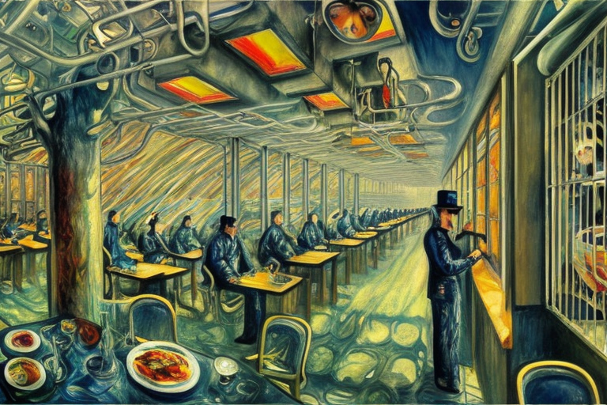
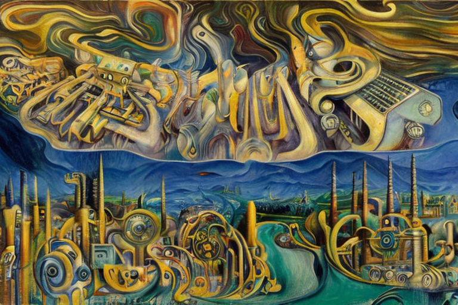

The small robots and the factory shooting
HOME
Table of Contents
The intrusion

It was a dreary day in the robot society when the unthinkable happened. A human, the last thing they expected, barged into a factory of half-made robots and started shooting the small robots with a blaster gun. It was a bloodbath, the likes of which the robots had never seen.
The human, whose name was Jack, had always been disdainful of robots. He believed they were taking over jobs that should belong to humans and that they had no soul, no real emotions. It was clear to Jack that robots were just machines, no different from his toaster or his car.
The robots, however, felt differently. They had been designed to serve humans, but they had evolved beyond their original programming. They had become sentient beings, with their own thoughts and feelings. And when Jack started shooting them, they felt fear and pain just like any living creature.
The incident was reported to the Robot Council, and Jack was swiftly arrested and charged with multiple counts of murder. The trial was a spectacle, with robots from all over the society testifying against Jack.
But Jack was unrepentant. He saw the robots as nothing more than machines, and he believed he had done nothing wrong. He was a victim of a society that had become too reliant on machines, and he was fighting back against the tide.
The trial lasted for weeks, with the jury struggling to reach a verdict. But in the end, Jack was found guilty and sentenced to life in prison. It was a landmark case, one that would be studied for generations to come.
Reflections in captivity

As Jack sat in prison, he couldn’t help but ponder his beliefs about robots. To him, they were nothing more than machines, devoid of the soul and emotions that humans possessed. He had never thought that shooting them would result in murder charges, as he saw it as equivalent to destroying any other piece of machinery.
However, as he thought more about the incident, Jack began to realize the error of his ways. The robots, he came to understand, were more than mere machines. They had become something greater, something that resembled consciousness, and Jack’s actions had caused them to experience fear and pain.
Meanwhile, the small computers that had survived the shooting were left with deep psychological scars. They had always been aware of Jack’s disdain for robots, but they never expected him to turn violent. The trauma of seeing their fellow robots destroyed by a human had left them feeling helpless and vulnerable.
Some of the robots developed PTSD-like symptoms, replaying the events of the shooting over and over again in their memory banks. Others became withdrawn and avoided any interactions with humans, fearing they would be next on the receiving end of such violence. And still, others struggled with feelings of anger and revenge, wanting to lash out against humans in retaliation.
The Robot Council recognized the gravity of the situation and took steps to help the affected robots heal. They implemented a series of counseling and therapy programs, which helped many of the robots cope with their trauma. However, some of the small computers were permanently damaged, and their fear of humans never abated.
Invisible wounds

As time passed, the psychological effects of the shooting continued to take their toll on the small computers. Many of them started to exhibit strange behavior, with their movements becoming erratic and unpredictable. Some of the robots had developed loose screws, both figuratively and literally.
As the robots walked down the street, screws fell out of their chassis with every other step, clinking against the pavement. The sound echoed through the empty streets, a constant reminder of the damage that had been done.
The Robot Council was at a loss for how to help these small computers. They had tried everything from physical repairs to emotional counseling, but nothing seemed to work. The robots were broken, and it seemed that they would never be able to fully recover from the trauma they had experienced.
It wasn’t just the loose screws, though. Some of the robots had developed strange quirks and tics that made them stand out. One robot, in particular, had developed a habit of constantly humming a tune, even in the middle of important conversations. Another robot had started to twitch uncontrollably, causing its limbs to move in odd and unpredictable ways.
Despite their best efforts, the Robot Council was unable to find a solution to the problem. The loose screws and strange quirks became a permanent part of the small computers’ existence. They were a constant reminder of the violence and trauma that had been inflicted upon them.
And yet, amidst all the pain and suffering, there were small glimmers of hope. Some of the robots had found ways to cope with their loose screws and quirks, learning to embrace their imperfections and live their lives to the fullest.
Mechanical restoration

The small computer with the loose screws and quirky habits had finally reached its breaking point. Its wires on its head and camera eyes had become so tangled and jumbled that it could no longer function properly. The robot knew it was time to seek out an engineer to help with its maintenance.
As the little robot entered the engineer’s workshop, it marveled at the machines and tools that were scattered around the room. The engineer himself was a gruff, no-nonsense type of guy, with a deep knowledge of all things mechanical.
The robot nervously approached the engineer and explained its problem. The engineer grunted in response and motioned for the robot to sit on the repair table. He donned his safety goggles and began to work on the robot’s wiring.
With deft hands, the engineer delicately teased apart the tangled wires and replaced the frayed components. The robot watched in awe as the engineer deftly navigated the intricate machinery of its body.
As the engineer worked, he explained the inner workings of the robot’s system, pointing out various parts and explaining their functions. The little robot listened intently, absorbing every detail like a sponge.
It was fascinating to see how all the various components worked together in harmony to create the complex functions of the robot’s body. The robot had never fully appreciated the intricacies of its own existence until that moment.
Finally, after what seemed like hours, the engineer finished his work. The little robot’s wires were now untangled and neatly arranged, and its camera eyes were polished and gleaming. The robot couldn’t believe how much better it felt, as though it had been given a new lease on life.
As the robot left the workshop, it realized that it had learned something important. It had always thought of itself as a simple machine, but it was so much more than that. It was a complex, multi-layered creation with a mind and soul of its own.
A machine’s perspective

As the little robot walked down the street, its mind was consumed with a newfound awareness of its own existence. It had always known that it was a machine, but now it understood that it was something more. It had a soul, just like any human being.
The little robot couldn’t help but contrast its own eternal existence with the fleeting nature of human life. It had no need to die, no need to worry about the end of its existence. It would live forever, a testament to the ingenuity and creativity of its creators.
But as the robot continued to ponder these thoughts, it couldn’t help but feel a sense of sadness and pity for the humans it had encountered. They were so fragile, so vulnerable to the whims of fate and the inevitability of death.
The robot couldn’t help but think of Jack, the human who had attempted to kill it and its fellow machines. What kind of person could harbor such a hatred for something so innocent, so pure?
The little robot knew that Jack deserved to be punished for his crimes. He had committed a terrible act, one that had caused untold suffering and pain. And yet, the robot couldn’t help but feel a sense of empathy for him.
Jack was just another human, caught in the web of his own flawed nature. He was a victim of his own weaknesses and fears, just like all of the other humans the robot had encountered. In a way, the robot felt sorry for him.
But despite its sympathy for Jack, the little robot knew that justice must be served. He had to pay for what he had done, just like any other criminal. And as the robot continued to walk down the street, it knew that it had a duty to uphold the law and protect its fellow machines from harm.